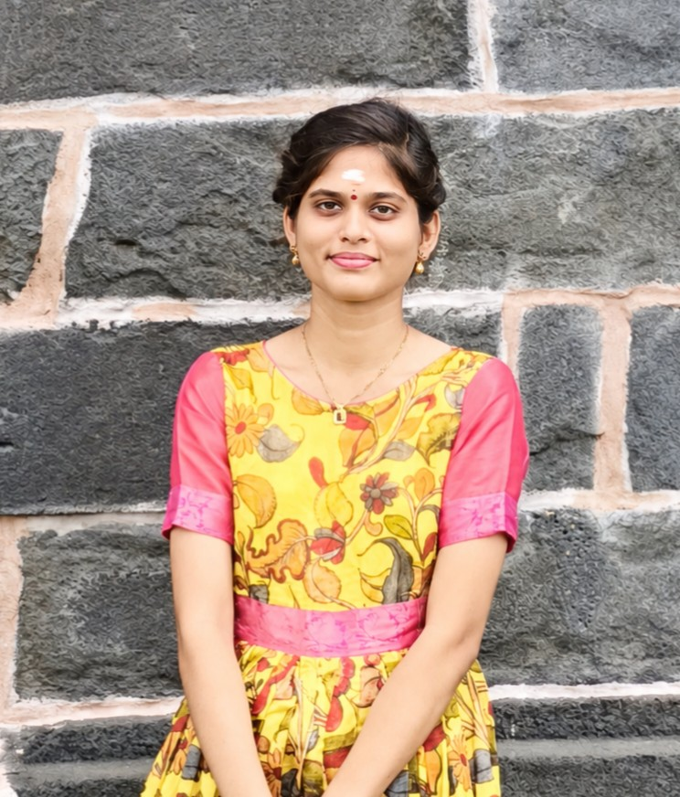

B.Tech Student | Tech Focused |
I am a 3rd-year B.Tech CSE-AIML student at Sasi Institute of Technology and Engineering with strong coding fundamentals in Python and C. I have solved 1000+ problems on CodeChef, which has strengthened my problem-solving skills and given me confidence to learn new technologies quickly. I’m passionate about Artificial Intelligence, Machine Learning, and Web Development, and I learn fast by applying concepts to real-world applications. Certified in C and Python by Codechef, and in English by Cambridge. I’m looking for opportunities to contribute, collaborate, and grow as an aspiring AI/ML Engineer and I am fascinated by Web Development and enjoy creating clean, responsive, and user-friendly websites.
To obtain an internship where I can apply my programming skills, enhance my knowledge of web development and AI/ML, and contribute to real-world projects while continuously learning and growing.
| Qualification | School/College | Year | Score |
|---|---|---|---|
| B-Tech | Sasi Institute of Technology and Engineering | 2024-Present | CGPA:9.0 |
| Intermediate | Narayana Junior College | 2022-2024 | 94% |
| SSC | Swarna Bharathi English Medium School | 2021 | 562 |
Smart Resource Allocation System (Team Project)
Email: purnima.tatina24@sasi.ac.in
Phone: +91 9392882971
"Progress Over Perfection...."